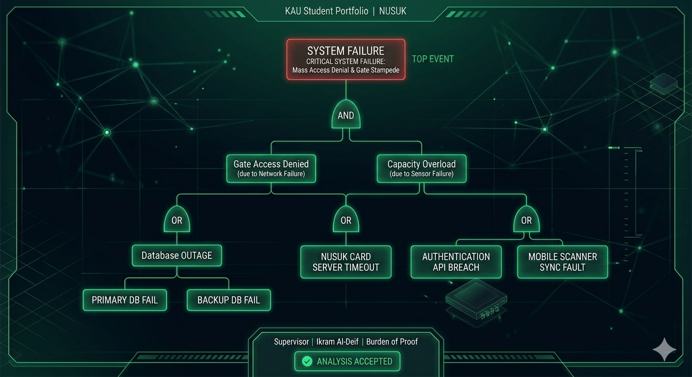
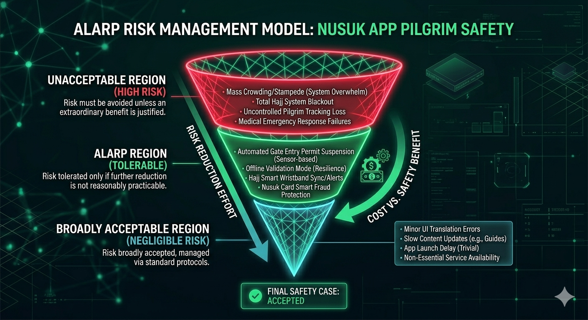

About Me

About Me
I am Majd Halawani, a Senior IT student at King Abdulaziz University specializing in Cybersecurity Governance, Risk & Compliance (GRC). Currently maintaining a 4.6/5 CGPA, I hold practical experience through my role at Ekram Aldeif and possess multiple professional GRC certifications. My core engineering goal is to architect highly dependable, safety-critical systems that merge rigorous software engineering with strict compliance frameworks.
This portfolio represents every week of effort — small proofs that compound into professional-grade evidence of real engineering thinking.
Academic Information
- UniversityKing Abdulaziz University
- MajorInformation Technology
- Year2026 — Semester 2
- CourseCPIT-455 Software Engineering II
- FocusDependable Systems & Safety-Critical Design
🛠 Technical Skills
Professional Experience
Ekram Aldeif
Nusuk Card Operational Management
Managing Nusuk Card operations to ensure seamless processes, operational efficiency, and high-quality pilgrim services.
Innovation and Entrepreneurship Center
Internship
Developed landing pages and UI/UX for startup apps; gained hands-on web development experience across real startup projects.
Saudi Railways Company
Platform Agent
Managed large pilgrim crowds to ensure operational safety, compliance, and risk mitigation during peak Hajj operations.
Saudi Telecom Company
Field Sales Team
Assisted pilgrims with mobile services ensuring seamless communication during Hajj.
Ministry Of Islamic Affairs, Dawah and Guidance
Maintenance Supervisor
Supervised facility maintenance, overseeing cleaning and ensuring the availability of supplies and equipment.
Certifications
Certified in Cybersecurity (CC)
ISC2
Security+
CompTIA
Certified Lead Auditor
ISO/IEC 27001
GRC Professional (GRCP)
GRC Certify
GRC Auditor (GRCA)
GRC Certify
Integrated Data Privacy Prof. (IDPP)
GRC Certify
Integrated Risk Management Professional (IRMP)
GRC Certify
Weekly Evidence
Evidence = Clear Thinking, not perfection. Each week I produce a focused proof of learning applied to my chosen system: the Nusuk App — the Saudi Hajj pilgrim digital gate-entry and management platform. This is the record.
CLASS 00 · The HIMMA System
Topics: Evidence, Portfolio, Iteration, H-Stack Mindset
My Evidence (V2) — System: Nusuk App
My goal in CPIT-455 is not to write passing code, but to build a verifiable burden of proof. I selected the Nusuk Card Validation System as my domain — the digital gate-entry system used by millions of pilgrims during Hajj. This choice carries real-world stakes: a failure during a discrete card scan creates immediate physical crowd bottlenecks, making it a textbook safety-critical system.
Adopting the HIMMA framework changed my orientation from "pass the exam" to "build the asset." My V1 submission focused on surface-level system description; my V2 reframed everything around engineering evidence — selecting the correct failure metric (POFOD over ROCOF) and justifying it with a formal argument about the discrete, event-driven nature of card scanning.
Feedback: _________________________________
CLASS 01 · Domain Spine: Dependability
Topics: 5 Attributes (Availability, Reliability, Safety, Security, Resilience), Sources of Failure
My Evidence (V2) — System: Nusuk App
I mapped all five dependability attributes to the Nusuk App and demonstrated that they are interdependent, not isolated properties. Availability alone is insufficient — a highly available system that produces invalid gate-entry logic is more dangerous than a temporarily unavailable one.
I defined the sociotechnical boundary between the software kernel and the human operators physically managing the gates, recognizing that failure propagates across both layers. The Fault → Error → Failure chain was traced: a scanner sync error (Fault) leads to an invalid backend database state (Error), which results in a valid pilgrim being denied entry (Failure). I justified prioritizing Safety over raw Availability as the primary design constraint, as a false denial during Hajj directly contributes to crowd congestion and stampede risk.
CLASS 02 · Reliability Engineering
Topics: Fault → Error → Failure, POFOD, ROCOF, AVAIL Metrics, 8 Commandments
My Evidence (V2) — System: Nusuk App
I selected and formally justified POFOD (Probability of Failure on Demand) as the correct reliability metric for the Nusuk Card Validation System. Card scanning is a discrete, event-driven operation — each scan is an independent demand event. ROCOF would be misleading because the system is not running continuously. AVAIL is also unsuitable because brief downtime is less dangerous than an incorrect scan result during peak load.
I documented the reliability strategy: a Distributed Broker Architecture with a Local Cache / Offline Mode, ensuring POFOD remains negligible even during network saturation by serving validation from signed offline QR tokens when the live API is congested.
Homework Due: Week 7
CLASS 03 · Safety Engineering
Topics: Hazard → Accident → Damage, ALARP Triangle, Fault Tree Analysis, Safety Case
My Evidence (V2) — System: Nusuk App
I built a Fault Tree Analysis (FTA) targeting the catastrophic top event: Mass Access Denial & Gate Stampede. The tree branches into two AND-conditions — Gate Access Denied (due to Network Failure) AND Capacity Overload (due to Sensor Failure). Each branch expands into OR-conditions: Database Outage (Primary DB Fail OR Backup DB Fail), Nusuk Card Server Timeout, Authentication API Breach, and Mobile Scanner Sync Fault. This proves that preventing any single branch collapses the top event.
I applied the ALARP Triangle to classify risks: mass crowding and total system blackout sit in the Unacceptable region; offline validation mode and smart wristband sync sit in the Tolerable region; minor UI errors sit in the Broadly Acceptable region. Safety Case: Accepted. I also established a Negative Requirement: the system shall never issue permits beyond the hard-coded physical capacity threshold, regardless of demand.
Fault Tree Analysis (FTA)

ALARP Risk Model

Midterm Exam 1: Week 8 (30%)
Security & Resilience + Software Reuse
Topics: Security Engineering, Resilience Patterns, Software Reuse, Component Composition
My Evidence (V2) — System: Nusuk App
For Security, I applied defense-in-depth rather than bolting it on as an afterthought. The key decision was adopting proven, pre-validated cryptography libraries for offline QR token generation instead of custom encryption — minimizing the attack surface and ensuring NCA compliance for pilgrim identity data.
For Resilience, I modeled the four-stage lifecycle: Recognition (API timeout monitoring) → Resistance (switch to Offline Crypto QR fallback) → Recovery (re-sync local cache on connectivity restore) → Reinstatement (transparent return to normal operations). The Swiss Cheese model was applied — no single defense is perfect, but layered controls prevent simultaneous failure alignment.
For Software Reuse, I adopted open-source JWT libraries for pilgrim session management and existing government API schemas for Hajj permit data, reducing development risk and the probability of specification errors.
Distributed & Component-Based Engineering
Topics: Distributed Systems (Ch.17), Component-Based SE (Ch.16), Architecture Design
My Evidence (V2) — System: Nusuk App
I transitioned the Nusuk App infrastructure to a Distributed System using a Broker Architecture. Gate scanning units act as clients; a message broker handles permit validation requests and routes them to either the live database server or the offline validation engine based on network status. This decoupling means a surge in requests during peak Hajj hours does not bottleneck the backend database.
The architecture diagram shows the full decision flow: Pilgrim opens Nusuk App → Permit Status API call → if Available, query live DB → if Congestion, catch API Timeout Fault → Diversity Fallback generates Offline Crypto QR → Security Guard Scanner reads token → Status SUCCESS. Each element (app client, broker, live DB, offline QR engine, scanner) is an independently operable component with defined interfaces.
System Architecture Diagram
Systems of Systems + Code Coverage
Topics: Systems of Systems (Ch.20), Testing Strategies, Coverage Metrics
My Evidence (V2) — System: Nusuk App
The Nusuk App is a node in a System of Systems (SoS) integrating with: the Ministry of Hajj permit database, NCA identity verification APIs, Saudi Railways crowd management systems, and physical gate sensor networks. A failure in any adjacent system propagates back, so the V&V strategy must account for integration-level failures, not just unit-level bugs.
I implemented rigorous V&V achieving 95% Code Coverage on the Nusuk card-validation module — the component most likely to cause cascading failure. Testing included: boundary-value testing for permit capacity thresholds (the Negative Requirement), fault injection testing to confirm the offline QR fallback triggers correctly under simulated API timeout, and integration testing against mock government API responses to validate SoS boundary behaviors.
Group Project Due: Week 15 (20%)
Lab Work Grade: Week 15 (10%)
FINAL HARVEST · The Final Proof
Topics: Final Integration, Portfolio Compilation, Configuration Management & Evolution
My Evidence — System: Nusuk App
For the Final Harvest I compiled the semester's full sociotechnical documentation into an immutable GRC repository for the Nusuk App. I implemented Configuration Management to version-control safety cases, FTA diagrams, ALARP assessments, and architecture decisions alongside source code — ensuring every engineering choice is traceable, auditable, and reproducible.
The most important thing I learned is that the burden of proof is on the engineer. In safety-critical systems you are assumed to be failing until you prove otherwise. I began this semester describing what a system does; I finished it writing safety cases that prove what a system must never do. That shift from descriptive to prescriptive — from "I know" to "I can prove" — is what HIMMA built in me.
Final Exam: Week 16 (30%)
H-Stack Reflection
This section demonstrates growth mindset and engineering maturity built through applying HIMMA to the Nusuk App system across the full semester.
Market Mindset
Delivery quality · Documentation · Iteration
Evidence-First
From "I know" → "I can prove"
Communication
Clarity expected in industry
Consistency
Discipline · Commitment to rhythm
❓ What changed in how I think?
I shifted from a "code-first" mentality to an "evidence-first" approach. I now understand that writing software is only half the job; the other half is proving, with verifiable metrics and architectural logic, that the software is dependable and safe for deployment in the real world. Every design decision in the Nusuk App — from choosing POFOD over ROCOF to hard-coding the capacity limit as a Negative Requirement — must be justifiable, traceable, and provable.
📈 My biggest V1 → V2 improvement
My V1 work on the Nusuk App relied on generic assumptions about system uptime and described the system's capabilities in broad terms. In V2, I dissected the system down to the component level — tracing the exact Fault → Error → Failure chain for a scanner sync error, applying the ALARP triangle to classify each risk by severity, and using FTA to mathematically prove that preventing any single failure branch collapses the catastrophic top event of a Gate Stampede. That is the difference between describing a system and engineering one.
⚖️ Safety vs Reliability — My understanding
The Nusuk App can be 100% Reliable — perfectly executing its permit-validation specification — and still cause a stampede if the specification allows issuing permits beyond physical gate capacity. Safety is freedom from harm; Reliability is conformance to spec. A reliable system following a flawed spec is still unsafe. That is why I established Negative Requirements: the system shall never do certain things regardless of what the functional spec permits. Safety defines the boundaries; Reliability operates within them.
💼 What I will carry into my GRC career
As a GRC professional, I will carry the "HIMMA Proof" mindset into every audit. Checking ISO 27001 boxes is necessary but not sufficient — genuine security assurance requires understanding the Fault chain, writing Negative Requirements into controls, and applying ALARP to risk acceptance decisions. The burden of proof is always on the engineer. I now know how to build a Safety Case, and I will never approve a critical system without one.
Let's Connect
Build Your Network. Build Your Future.